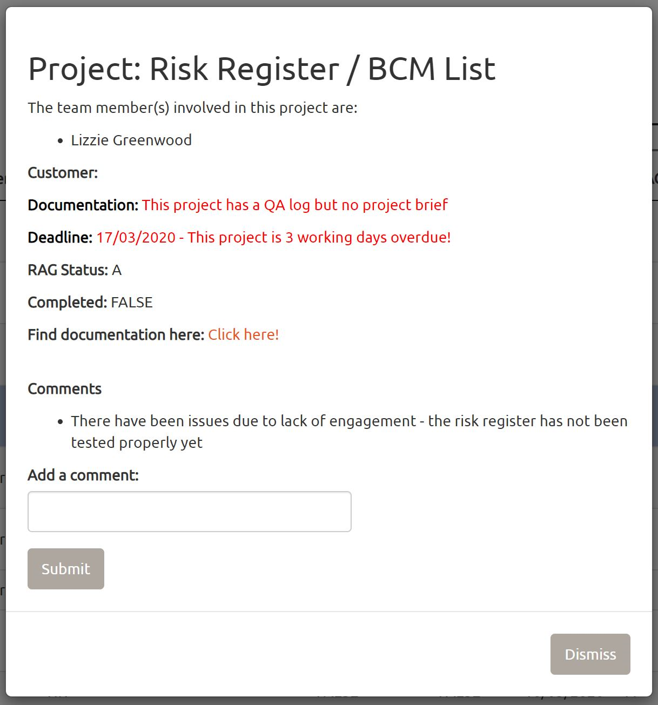

6 Editing the Home Page
Because the ui is very similar for all the pages I am gping to concentrate explaining the server side as this is the most complex section and if you need to make any changes to the home page the difficulty lies in this file.
Within the server/Home.R file there are 3 sections:
- a setting up section
- People table section
- Project table section
6.1 Setting up section
This has four sub-sections:
- Functions for reading and creating the dataframes from the csv files
- Outputting the tables (team members table and the project table)
- Reactive data value that changes whenever a user click a confirm button which in turn changes the datasets and csv files, so that overview pages update whenever current user makes a change
- Functions for saving the newly changed dataframes to the csv files.
There are 2 functions for reading the csv files and creating an R dataframe: one for the People.csv, peopleData() and one for Projects.csv, projectData(). These functions simply reads files named Peaple.csvand Projects.csv in the datapathway entered in the App.R file.
The outputting of the tables is done using the function renderDataTable() from the package DT. peopleData() is called for the data within the table. This then needs to be filtered so that the boolean variable CurrentlyInTeam equals TRUE and then ensure you cannot see this column in the application by using %>% select (-CurrentlyInTeam). The reason for this variable will be explained later. The project table similarly uses the function renderDataTable() and calls projectData() for the data used in the data table. The columns Comments and Documentation are hidden from the table as they will be used when a user clicks the details of project button for the individual projects.
The reactive data value that changes whenever a user clicks a confirm button is created using the following code:
confirmingButtons <- reactive({
input$ConfirmNewPerson + input$ConfirmPerson + input$ConfirmRemovalOfPerson + input$ConfirmRemovalOfProject + input$ConfirmProject + input$ConfirmNewProject
})It simply adds all the inputs from the confirm button which change when they are clicked.
The functions to save changes made to the people table and the project table are called saveChangesToPeopleFile() and saveChangesToProjectFile() respectively. They first check the file exists (which should always be true), removes the file and then writes immediately after the new dataframe to the csv file. Then the table corresponding to the function in re-outputted to represented the new csv file and then the appropriate function (peopleData() or projectData()) is called so the new peopleData is the updated csv file.
6.2 People Table Section
The People table section is where all the code for adding/deleting/editing the people data can be found. Therefore I will split up explaining the section using the following sub-section:
- Code to add a person
- code to edit a person’s details
- Code to remove a person from the team
It is important to note that this is not the order in the code. In the code there is the ui for each f the forms for the 3 category then the code used to actually save the inputs given by the user. I am explaining it out of order as it makes more sense to explain it this way.
6.2.1 Adding a person
On the homepage there is a button saying “Add New Team Member”. This is created in the ui using the following code:
actionButton("addPerson", "Add New Team Member") When this button is clicked the variable where the input for this widget changes. This input varible is stored in the variable input$addPerson which you can see is the first parameter given in the actionButton function above. There is an observerEvent chunk of code which is triggered when the input$addPerson changes (when someone clicks this button). This uses the function showModal and modalDialog to produce a pop-upo window. Inside these functions widgets or html elements can be added to the pop-up window. Here the form asks for all the information which can be stored in the team members table (Name and Team).
This relatively simple, however where things get a more complex is when sanitising the information that the user enters. This is where a user shouldn’t be able to add the same team member twice ot a person shouldn’t be bale to leave a persons name blank. The way the code deals with this is by using booleans (true or false variables) and conditional panels. Conditional panels are used to show error messages when a user has inputted a non-allowed value into any of the inputs. A conditional panel is also used to only show the confirm button of the form (to save the new person) if all information is allowed.
In this application error messages are always placed within the function
h5()as css has been added to make this red.
Three booleans are used to sanitise the users input for adding a team member. They are as follows:
newNameExistsnewNameHasBeenRemovednewTeamNameBlank
newNameExists checks the Name field in peopleData and if the name entered in the Name input field is already in the Name column it retruns true otherwise it returns false
newNameHasBeenRemoved is a bit more complex. If newNameExists is TRUE and the CurrentlyInTeam field is FALSE then newNameHasBeenRemoved is TRUE, otherwise it is FALSE.
newTeamNameBlank returns TRUE if the user hasn’t entered a value in the name input section otherwise returns FALSE
The error messages given are as follows:
- if
newNameExistsis true andnewNameasBeenRemoved. The error message given is “Team member is already in list” - if
newNameHasBeenRemovedis true the error message given is “This Team Member was previously deleted, to reinstate them click confirm. Otherwise to avoid merging the 2 different team members’ projects together, please choose a different name” - if
newTeamNameBlankis true an error message pops up “Add a name!”
The confirm button shows it the following things occur
- Either:
newNameExistsis false- OR
newNameExistsandnewNameHasBeenRemovedare both true
newTeamNameBlankis false
If a person correctly fills in the form and clicks confirm another chunk of code will be ran as the observerEvent was triggered when clicking the button. This is the code to add the team member to the peopleData dataframe in R and then the saveChangesToPeopleFile() function will be called (from the setting up section) to save the changes to the People.csv file.
The chunk of code can be seen here:
observeEvent(input$ConfirmNewPerson, {
if(!newNameExists()) {
peopleData <- peopleData() %>%
rbind(data.frame(Name = c(input$addPersonForm), Team=c(input$addPersonForm2), CurrentlyInTeam=c("TRUE")))
#saves changes to csv file and re-renders table
}
else {
# if reinstating a team member deleting the original row and adding a new row where they are currently in the team
peopleData <- peopleData() %>%
filter(tolower(Name)!=tolower(input$addPersonForm)) %>%
rbind(data.frame(Name = c(input$addPersonForm), Team=c(input$addPersonForm2), CurrentlyInTeam=c("TRUE")))
}
#reads data from csv file (peopleData() function), then attatches new person to table
saveChangesToPeopleFile(peopleData)
removeModal()
})If the new name entered already exists (so the user is reinstating a previously removed user), the row with that name is deleted from the table and then a new row is created (using the rbind function with the team the user inputted and the CurrentlyInVariable is set to TRUE.
Otherwise a dataframe is created with one row (the information the user inputted) and this is attached to the previous peopleData
The changes are then saved and the modal is removed from the screen to see the updated table with the new person in the table.
6.2.2 Editing a Person
Similarly to adding a person, there is also a button for editing a team member which appears once a team member has been selected in the table. Clicking this button triggers a chunk of code to run producing a modal (pop-up window). This modal is populated with various input widgets for all the neccessary information all having the default value of what was originally in the table. It also uses booleans for detecting areas and sanitising the input, these are as follows:
editedNameExistseditedTeamNameBlank
These do the same thing as the newTeamName and newTeamNameBlank booleabs from the adding a person section. The only difference is the editedNameExists boolean also allows the original name in the box (as that wouldn’t create any duplicates). This is so that a user can click the confirm button if they have changed the Team for instance but not the name.
For the confirm button to appear the following statements need to be true:
editedNameExistsis falseeditedTeamNameBlankis false
When the confirm button is clicked it makes changes to both the People.csv file and Project.csv file. firstly the current peopleData dataframe is filtered so that it only includes current team members. This is because the table that is outputted only shows current team members and to edit the correct person the row numbers of the people in the table need to be indetical to those where the edits are occuring. Once the peopleData has been filtered to only current team members, the row number of the selected person is used to edit their details in the table. T
The variable the row number is stored in is input$ + the name of the output of the table (people) + _rows_selected. In this instance input$people_rows_selected. This is used to insert the input values overwriting the previous ones using this:
newPeopleData[input$people_rows_selected, 1] <- as.character(input$editPersonForm)After this the original peopleData is filtered to team members who are not currently in the team and this table is attached to the newPeopleData created above. Then if a person has changed their name, they need to be changed in the TeamMembers column of the project table, so the overview pages work as you would expect. This is done using the following code:
projectData <- projectData() %>%
mutate_all(as.character) %>%
mutate(
TeamMembers = str_replace_all(TeamMembers, as.character(peopleData()[input$people_rows_selected, 1]), input$editPersonForm)
)This replaces all of the original name (peopleData()[input$people_rows_selected, 1]) with the new name confirmed by the user (input$editPersonsForm) in every row of the project table.
6.2.3 Removing a Person
When a row of the team members table is selected 2 buttons appear. One of those buttons is labelled with “Remove Team Member”. When clicked a pop-up window appears saying “Are you sure you want to remove this team member?” with a confirm button. The confirm button triggers the code that removes the team member from the peopleData table and the People.csv file.
Fully removing a Team Member from peopleData causs many issues. This is because all team members listed in projectData needs to be in the peopleData before the application will save any additions/changes. This means that you would have to remove their name from the project details if you wanted to make any other change to the project details. This would be an issue as the record of who worked on the project will effectively be removed. To solve this issue the column CurrentlyInTeam was created in peopleData so that the application stores a record of everyone who was listed in the tracker at some point.
This is done by completing the following steps:
newPeopleDatais created by filteringpeopleDatato all current team members (so that the input row given can be correctly matched to the team member the user wants to delete)- Then
personToRemoveis produced by filteringnewPeopleDataby the name of the person in the row selected - Rewrite the third column (
CurrentlyInTeam) withFALSEin the newly creaedpersonToRemove. There now should only be one row in this table and it should be the row which the user selected - Next filter the
newPeopleData(from step 1) to not equal the row the user selected then use therbindfunction to attach the following tables:personToRemove- Original
peopleDatafiltered to team members who are not currently in the team
6.3 Project Table Section
The project table section is where all the code for adding/deleting/editing/seeing the details the different projects can be found. Therefore I will split up explaining the section using the following sub-sections:
- Code to add a project
- code to edit a project’s details
- Code to remove a project from the team
- see the details of a project and add comments
It is important to note (similarly to the people section) that this is not the order in the code. In the code there is the ui for each of the forms for the 4 categories then the code used to actually save the inputs given by the user. I am explaining it out of order as it makes more sense to explain it this way.
6.3.1 Adding a Project
When a user clicks the button to add a project this triggers a pop-up window to appear. This contains the form to add a project. Similarly to adding/editing a team members details, there needs to be some restrictions on what the user can enter into the data tables. This is done using different booleans similarly to adding/editing team members.
Adding a project uses 3 booleans:
newProjectNameExistsnewTeamMembersDoNotExistnewProjectNameBlank
newProjectNameExists returns true if the name the user entered for the project exists in the Name field of the projectData and false otherwise
newTeamMembersDoNotExist returns true if all the team members listed in the input are in the Name column from peopleData. This is done by counting the number of team members entered by the user that are not in the peopleData table. If this number is 0 or the input is empty (a project can be created without having any team members currently working on it) it returns true.
The way this is calculated is by the following line of code:
!(((length(unlist(str_split(input$addProjectForm2, ", "))[!(unlist(str_split(input$addProjectForm2, ", ")) %in% peopleData()$Name)]) == 0))||(input$addProjectForm2==""))newProjectNameBlank returns true if the user hasn’t entered anything into the text input box for the name and false if otherwise.
The error messages that will appear because of these booleans can be seen below:
| Boolean | Error.Message |
|---|---|
newProjectNameExists |
This name is already taken, please choose another one |
newTeamMembersDoNotExist |
Team member(s) listed above does not exist, please try again |
newProjectNameBlank |
Add a name! |
The confirm button is only shown when none of the above booleans are true.
When a user has entered all relevant information and has clicked confirm the code to add the project is triggered. This code is very simple. It produces a dataframe with all the same headers as projectData with all the information the user has just entered. This dataframe is then attached to the original projectData using rbind. This s then saved to Projects.csv and re-outputted in the application using the functions in the setting up section.
6.3.2 Editing a Project
When a user selects a row in the project table 3 buttons appear to the right of the table to do the following things:
- edit projects
- remove projects
- see the details of project
When the user clicks this button a pop-up window.The pop-up window appears as there is an observeEvent that uses the button as its a parameter and then uses the showModal andmodalDialog functions this includes several different widgets for entering the Name, TeamMembers, Customer fields etc. The inputs are controlled by multiple booleans like in the previous sections:
| Boolean | Calculation | Error.Message |
|---|---|---|
editedProjectNameExists |
This returns true if the new name is in projectData already unless it is the row which is selected. This is done using this line of code: tolower(input$editProjectForm) %in% tolower(projectData()[-input$project_rows_selected,]$Name) |
This name is already taken, please choose another one |
editedProjectTeamMembersDoNotExist |
This is the same calculation as newTeamMembersDoNotExist but use the correct input (input$editProjectForm2 instead of input$addProjectForm2) |
Team member(s) listed above does not exist, please try again. |
editedProjectNameBlank |
This returns true if input$editProjectForm equals ’’ |
Add a name! |
The confirm button appears when all the above booleans are false using a conditionalPanel. When the user clicks confirm this triggers the block of code to run to edit a project’s details in peopleData and in Projects.csv. This is font by using the rownumber of the selected row and overwriting all the information with the new user input. As the user inputs have a default value of the previous values if no changes are made the information in overwritten with the same information that was in the table previously
6.3.3 Deleting a Project
As mentioned above when a user selects a row 3 buttons appear. If the user clicks the button to delete a project a pop up window will appear asking them to confirm. When clicked the chunk of code gets run to delete the projects by removing the row selected from the orginal projectData and saving the changes using the functions explained in the setting up section.
6.3.4 Getting a Project’s Details
As mentioned above when a user selects a row 3 buttons appear one to see the details. This causes a pop-up window to appear showing all the details of the selected project in a more readable format. In this window users can add comments and see comments previously made. These comments are stored in a column of projectData that are not outputted in the project table in the application.
First all the data needed for the information is collected. This includes the following data sets:
- updates
projectData teamMembersusing theTeamMembersfield ofprojectData- only has one columnteam_memberscommentsusing thecommentsfield ofprojectData- only has one columnComments
The above datasets are used to create some shiny outputs (outputs to put in modal which require ui tags e.g. li() meaning list item):
projectCommentslistwhich is a list of team members
Some vectors/values are also created to use in the modal. They are as follows:
documentationText- a vector containing 2 strings: the first being the text to output to the application, the second being CSS code to determine the style of the text outputted (colour/bold)daysToDeadlinecalculates the amount of days to the deadlinedeadlineText- a vector containing 2 strings: the first being the text to output to the application, the second being CSS code to determine the style of the text outputted (colour/bold)
As well as the above one boolean is uesd for a conditional panel: noDocumentation. If a link has not been supplied to a projects documentation in the project details pop-up window it will say “No link to the documentation for this project has been given” otherwise a hyperlink will be created to the documentation which reads “Click here!”
Below is a screenshot of the project details section for a project

The bullet pointed list of team members is produced using the following lines of code:
the outputoutput$list <- renderUI({ apply(teamMembers, 1, function(x) tags$li(x['team_members'])) })listis then rendered from within the modal functionsThe customer information is then filled in by directly referencing the
projectData. The following line of code does this (within themodalDialog):p(span("Customer: ", style="font-weight:bold"), projectData[input$project_rows_selected,3]),The different outputs from
documentationTextcan be seen below:If.true… Text.Output Text.Style fields ProjectBriefandQALogare both true in the selected rowThis project bas both a project brief and a QA log ’’ (just normal text) if neither of the fields ProjectBriefandQALogin the selected row are trueThis project currently has NO documentation associated with it color: red; font-weight: bold The ProjectBrieffield is true in the selected row but theQALogfield is falseThis project currently has a project brief but no QA log color: red The QALogfield is true in the selected row but theProjectBrieffield is falseThis project has a QA log but no project brief color: red The
DaysToDeadlinecalculates the number of work days till the deadline, if the deadline has passed gives a negative number. The code to do this can be seen below:daysToDeadline <- if(as.Date(projectData[input$project_rows_selected,6], "%d/%m/%Y") < Sys.Date()){ -sum(!weekdays(seq(as.Date(projectData[input$project_rows_selected,6], "%d/%m/%Y"), Sys.Date(), "days")) %in% c("Saturday", "Sunday")) } else { sum(!weekdays(seq(Sys.Date(), as.Date(projectData[input$project_rows_selected,6], "%d/%m/%Y"), "days")) %in% c("Saturday", "Sunday")) }The different outputs from
deadlineTextare as follows:If.true… Text.Output Text.Style The deadline for the seleted project is today’s date The project is due today! color: red If number of days till the deadline is negative (already passed) This project is [ daysToDeadline] working days overdue!color: red If the deadline is in the future There are [ daysToDeadline] days till the deadline for this project